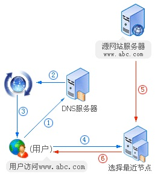
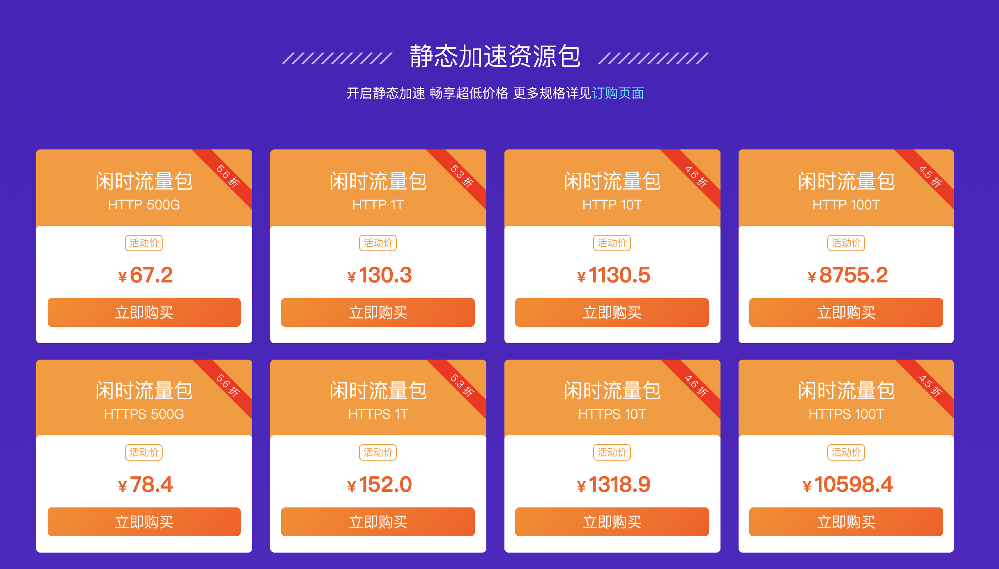
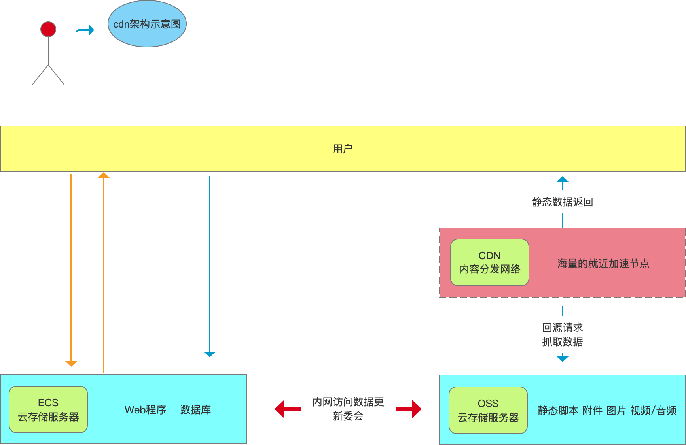
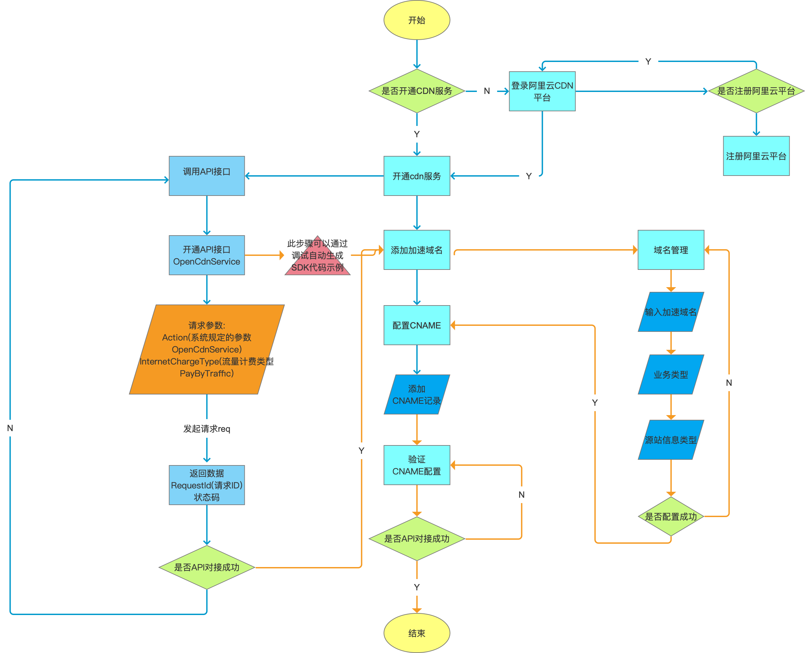

什么是cdn?
即内容分发网络，其基本思路是尽可能的避开互联网上有可能影响数据传输速度和稳定性的瓶颈和环节，使内容传输更快、更稳定。通过在网络各处放置节点服务器所构成的现有互联网基础之上的一层虚拟网络，CDN系统能够实时的根据网络流量和各节点的连接，负载状况以及用户的距离和响应时间等综合信息将用户的请求重新导向离用户最近的服务节点上。其目的就是使用户能够就近的获取请求数据，解决网络访问拥挤状况，提高用户访问系统的响应时间。
为什么要使用cdn?
如果你在经营一家网站，那你应该知道几点因 素是你制胜的关键：
- 内容有吸引力
- 访问速度快
- 支持频繁的用户互动
- 可以在各处浏览无障碍
另外，你的网站必须能在复杂的网络环境下运行，考虑到全球的用户访问体验。你的网站也会随着使用越来越多的对象（如图片、帧、CSS及APIs）和形形色色的动作（分享、跟踪）而系统逐渐庞大。所以，系统变慢带来用户的流失。
Google及其它网站的研究表明，一个网站每慢一秒钟，就会丢失许多访客，甚至这些访客永远不会再次光顾这些网站。可以想像，如果网站是你的盈利渠道或是品牌窗口，那么网站速度慢将是一个致命的打击。
这就是你使用CDN的第一个也是最重要的原因：为了加速网站的访问
除此之外，CDN还有一些作用：
1. 为了实现跨运营商、跨地域的全网覆盖
互联不互通、区域ISP地域局限、出口带宽受限制等种种因素都造成了网站的区域性无法访问。CDN加速可以覆盖全球的线路，通过和运营商合作，部署IDC资源，在全国骨干节点商，合理部署CDN边缘分发存储节点，充分利用带宽资源，平衡源站流量。阿里云在国内有500+节点，海外300+节点，覆盖主流国家和地区不是问题，可以确保CDN服务的稳定和快速。
2. 为了保障你的网站安全
CDN的负载均衡和分布式存储技术，可以加强网站的可靠性，相当无无形中给你的网站添加了一把保护伞，应对绝大部分的互联网攻击事件。防攻击系统也能避免网站遭到恶意攻击。
3. 为了异地备援
当某个服务器发生意外故障时，系统将会调用其他临近的健康服务器节点进行服务，进而提供接近100%的可靠性，这就让你的网站可以做到永不宕机。
4. 为了节约成本投入
使用CDN加速可以实现网站的全国铺设，你根据不用考虑购买服务器与后续的托管运维，服务器之间镜像同步，也不用为了管理维护技术人员而烦恼，节省了人力、精力和财力。
5. 为了让你更专注业务本身
CDN加速厂商一般都会提供一站式服务，业务不仅限于CDN，还有配套的云存储、大数据服务、视频云服务等，而且一般会提供7x24运维监控支持，保证网络随时畅通，你可以放心使用。并且将更多的精力投入到发展自身的核心业务之上。
cdn加速
CDN的本质仍然是一个缓存，而且将数据缓存在里用户最近的地方，使用户以最快的速度获取数据，即网络访问第一跳
。

由于CDN是部署在网络运营商的机房，这些运营商又是终端用户网络的提供商，因此用户请求的第一跳就到达CDN服务器，当CDN服务器中缓存有用户请求的数据时，就可以从CDN直接返回给客户端浏览器，最短路径的返回响应，加快用户的访问速度，减少数据中心的负载压力。
CDN能够缓存一般的CSS，js图片等静态资源文件，而且这些文件的访问频率很高，将其缓存在CDN可以极大的提高网站的访问速度。
cdn缓存加速工作原理
网站使用了CDN缓存加速后，用户发送请求访问，首先通过DNS重定向技术确认距离用户最近的CDN节点，并且将用户的请求指向此节点。如果该节点没有客户需要的内容结果，缓存服务器就会在源站点服务器中搜寻客户的需要的内容结果，找到后将结果保存到缓存服务器的本地，最后将用户请求所需的内容结果返回至用户端。保存是为了该用户或者不同用户第二次访问请求同样问题的结果，可以再很短的时间返回给客户结果，这样就加快了对用户端的响应速度。而且通过智能DNS解析后，用户访问同服务商的服务器，不管是用南方网络还是北方网络访问，都是相同的响应速度。这完全体现了CDN缓存加速的特性，给用户访问网站也带来了便捷的条件
常用cdn厂商有哪些及价格
[阿里云、腾讯云、七牛、网易云、
快快云
![img]](2019-09-24_23-33-12.png)
七牛云

腾讯云
如何实现业务?
帮助文档1:
阿里云帮助文档”
阿里云CDN可以说是国内稳定性比较好的，各项功能也比较齐全，并且分为了阿里云CDN和全站加速，先说说两者的区别：1、阿里云CDN
阿里云CDN和全站加速是分开的，CDN主要提供的是图片的加速、文件下载、视频音频点播、流媒体等，如果你的网站是图片站、小说站等，那么用阿里云CDN是最好不过的了。但是如果你的网站没有这些东西，那么阿里云就会提供所谓的全站加速，怎么理解这个全站加速？看2条。
2、全站加速
所谓阿里云的全站加速，无非就是对动态内容（asp/.net/jsp/php等动态文件）和静态内容（jpg、png、gif等图片资源/js/css/html)等）,也就是说，你网站的所有文件都可以给你加速，这也是和单纯的阿里云CDN有所区别的地方。我们看全站加速的界面如下：
站长可以根据以上的区别合理的选择使用阿里云CDN还是CDN的全站加速。各自的功能大家可以自行去体会，不过，这不是今天我们要将的重点不是教你如何选择CDN，而是聊聊全站加速的的动态加速规则，先上一张图：
官方的解释是这样的：开启动态加速后：可自定义动态资源加速规则，静态内容使用边缘缓存，动态内容采用最优路由回源。说直白点就是：静态的给你缓存起来，不用回源调用，动态的给你找个最好的线路回源。比如：我的图片png的给你缓存下，调用的时候就不用去源站了，我php文件的，比如会员登录，就可以去源站读取。
###CDN架构示意图

画接入流程图
